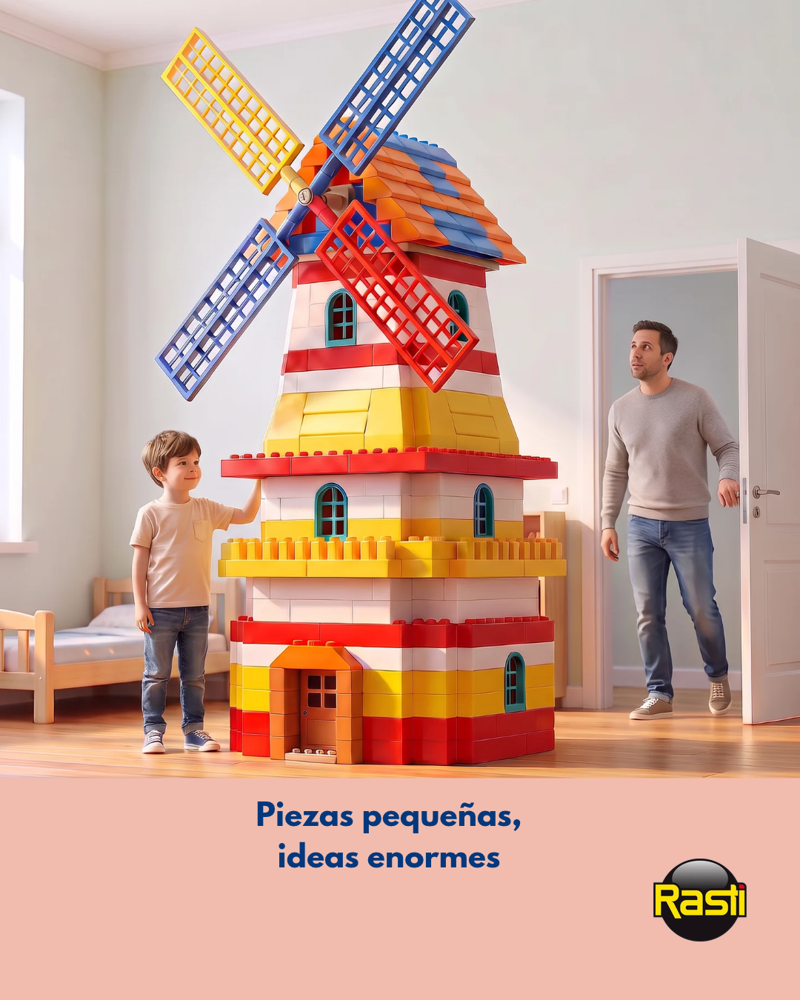
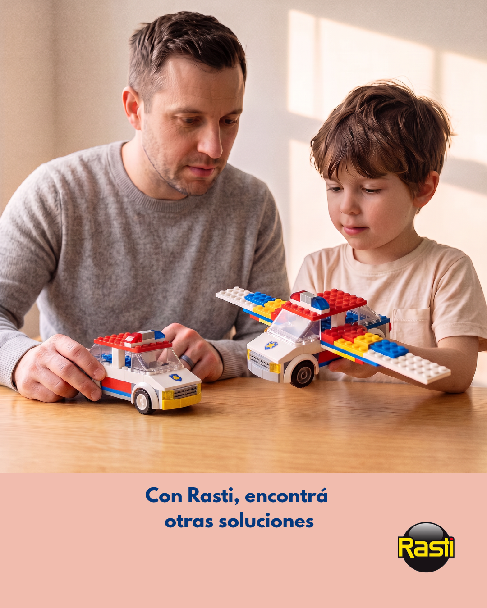
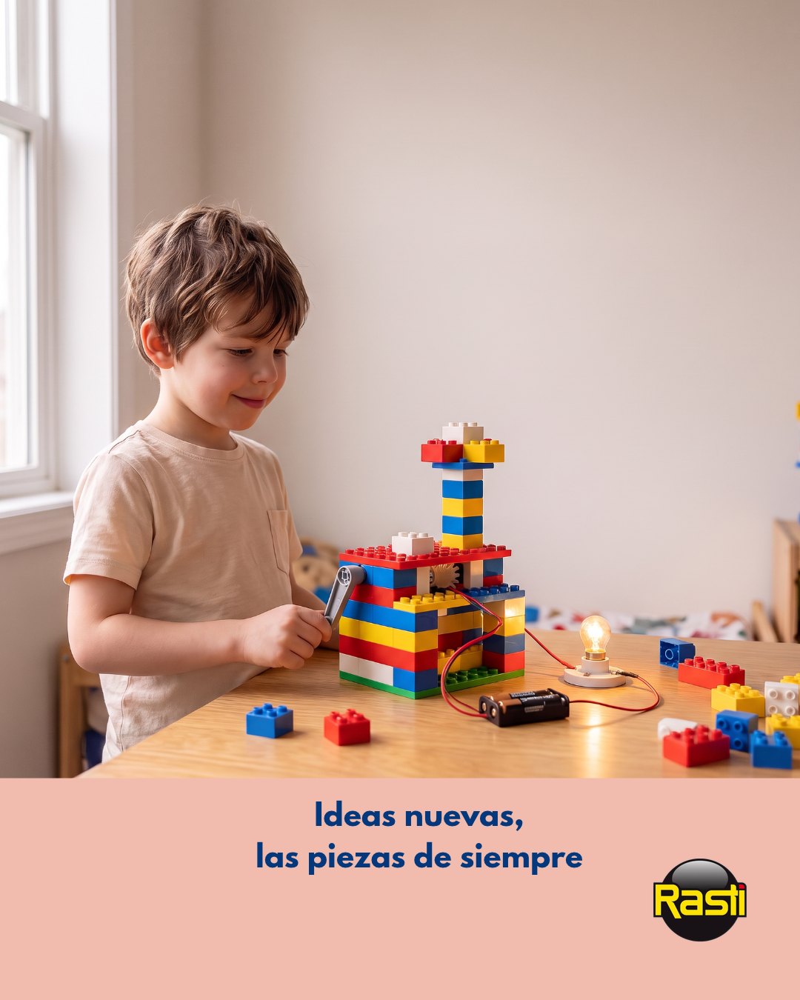

01
Público objetivo
Personas de 20 a 40 años que viven la ciudad en movimiento. Usan auriculares durante el viaje, la caminata o el trabajo para aislarse del ruido y recuperar un momento propio. No buscan más tecnología: buscan una pausa.
Portfolio de copywriting · 2026
Copywriting con mirada editorial: ideas claras, voz propia y textos que no piden atención. La ganan.
PROYECTO CONCEPTUAL · COPYWRITING
Tu viaje cotidiano puede convertirse en un respiro.
Beneficio
Redescubrí tus canciones favoritas. Cada detalle se vuelve emocionante.
El viaje
como refugio.
Sin marca · Sin especificaciones
PROYECTO CONCEPTUAL · COPYWRITING
Las clases grupales están llenas de compañeros en la misma que vos. Así que solo tenés que venir y hablar con ellos. Sin presiones.
Mensaje
En nuestras clases, equivocarse es parte de aprender. ¡Sin vergüenza!
Hablar
sin presión.
Sin marca · Sin sistema de reservas
CAMPAÑA PUBLICITARIA · REDACCIÓN PUBLICITARIA
Campaña para Instagram desarrollada en el marco de un ejercicio de redacción publicitaria. Ruta elegida: La imaginación sin límites.
PUC
«El juguete para que los chicos desarrollen su imaginación».
Ideas que
construyen.
Proyecto conceptual
01 · El brief
Antes de escribir, tres decisiones: a quién le hablamos, qué queremos mover y con qué idea. Un brief breve para un proyecto sin marca ni producto real: solo una hipótesis de comunicación.
01
Personas de 20 a 40 años que viven la ciudad en movimiento. Usan auriculares durante el viaje, la caminata o el trabajo para aislarse del ruido y recuperar un momento propio. No buscan más tecnología: buscan una pausa.
02
Convertir el trayecto cotidiano en una invitación a desconectar. Instalar la idea de que la música puede devolverle a cada viaje una dimensión más personal: menos ruido alrededor, más atención en lo que importa.
03
El viaje como refugio. Tratar el trayecto diario como un pequeño ritual: el momento en que el mundo baja el volumen y la música vuelve a estar cerca. Un tono íntimo, sensorial y sin urgencia.
02 · El brief
Tres decisiones para esta landing conceptual: a quién le hablamos, qué objetivo de conversión buscamos y con qué idea lo sostenemos. Solo lo necesario para mostrar el proceso.
01
Conseguir reservas para una primera clase gratuita. El foco está en la conversión hacia esa acción, sin simular un sistema de reservas real.
02
Personas que ya entienden inglés, pero que se traban al hablarlo. Buscan un ambiente grupal sin presión para soltarse con otros que están en la misma situación.
03
El inglés que ya tienen puede salir si hay confianza. La idea es normalizar el error: equivocarse es parte de aprender. Un tono cercano, directo y sin promesas exageradas.
03 · Brief
Campaña publicitaria para Instagram desarrollada en el marco de un ejercicio de redacción publicitaria. Cliente: Dimare S. A. · Marca: Rasti.
01
Rasti es un sistema de construcción por encastre. Combina juego, técnica y creación, y permite construir distintas formas y estructuras. Está dirigido a personas creativas, inteligentes y dinámicas, sin límite de edad.
02
Padres jóvenes que buscan que sus hijos participen en actividades más activas y desarrollen su ingenio. Algunos de esos padres jugaron con Rasti durante su propia infancia.
03
Desarrollar una campaña de tres publicaciones para Instagram, unidas por un concepto creativo común. Debe incluir el logo de Rasti y/o el packaging del producto. PUC: «El juguete para que los chicos desarrollen su imaginación».
Exploración creativa · Tres rutas
La infancia compartida
Territorio: emocional
La imaginación sin límites
Territorio: creativo · Ruta elegida
Las piezas que perduran
Territorio: producto y memoria
Desarrollo de campaña · Ruta B
Serie coherente unida por la idea «Siempre hay algo nuevo que crear». Las tres piezas utilizan las imágenes originales de la campaña.

Pieza 1 · La escala
Las piezas pueden ser pequeñas, pero las ideas que permiten imaginar y construir pueden ser enormes. Muestra cómo la imaginación transforma elementos simples en una creación de gran escala.

Pieza 2 · La solución inesperada
Crear también implica modificar lo que parecía resuelto, salir del camino previsto y encontrar posibilidades nuevas. Representa la creatividad como capacidad para proponer soluciones diferentes a partir de una misma idea inicial.

Pieza 3 · La invención
Las mismas piezas pueden convertirse en la base de una invención nueva cuando se combinan con imaginación e ingenio. Crear no consiste solamente en reproducir construcciones conocidas, sino también en imaginar algo que antes no existía.
04 · Sobre mí
Soy Ezequiel, copywriter en formación con base en redacción, tono editorial y organización. Me interesa encontrar las palabras justas para decir lo esencial: claro, directo y con intención.
Trabajé como auxiliar de sala en el Museo de Casa Rosada. Allí realicé tareas de recepción, atención al público, visitas guiadas y adaptación de la información histórica para visitantes nacionales e internacionales.
También trabajé como tallerista de Redacción y Edición independiente, dictando talleres para adultos, revisando, corrigiendo y editando textos. Además, fui profesor particular de Matemática, Física y Química, y ayudante de Análisis de Sistemas en la UTN, corrigiendo trabajos prácticos y brindando retroalimentación escrita.
Soy estudiante avanzado de Artes de la Escritura en la Universidad Nacional de las Artes. Gracias a mi formación en Sistemas, tengo formación complementaria en desarrollo web.
Combino estas experiencias para crear textos coherentes y sin vueltas. Este portfolio reúne piezas conceptuales para mostrar mi proceso de trabajo, la búsqueda de tono y enfoque creativo.
05 · Contacto
Para consultas sobre proyectos o colaboraciones conceptuales, podés escribirme por mail.
Escribime